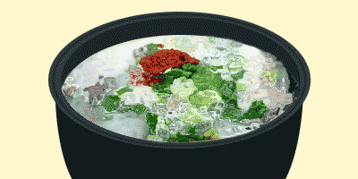

글쓴이 : 맛집킬러
서론
오늘은 보슬보슬 비가오는 날씨입니다. 이런 날이면 이상하게 진한 순대 국물이 생각이 납니다.
마침 친구가 근처 유명한 국밥집이 있다하여 오늘의 맛집, 웨버 순대국밥을 찾아가 보았습니다.
식당 내부
이 국밥집은 30년 동안 이어온 전통 때문인지, 옛날 시골집 같은 느낌을 줍니다. 노란 방바닥이 시골집의 향수를 자극합니다.
메뉴
이 곳의 메뉴는 오직 두 가지입니다. 역시 주인장의 자부심이 느껴지는 메뉴입니다.
음식 평가
외형
먼가 담백하게 담긴 순대의 모습이 아주 보기 좋습니다.
맛
머라 표현해야 할까요......
마치... 걸레 같습니다. 이런 맛은 난생 처음입니다. 먹으면서 몇 번이고 헛구역질을 했습니다.
결론
기가 막힙니다. 다신 안온다. 퉷.